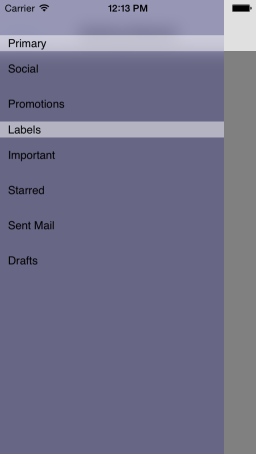

SideDrawer: Getting Started
This quick start tutorial demonstrates how to create a simple iOS application with TKSideDrawer.

Prerequisites
This article assumes that you have followed the Downloading UI for iOS, Installing UI for iOS and Setting Up the project steps from the common Getting Started article.
Setting up TKSideDrawer with TKSideDrawerController
Now that our project is created and the TelerikUI.framework is added, we can start referencing and using the TelerikUI types:
Open your ViewController.m file and add a reference to the TelerikUI header file:
#import <TelerikUI/TelerikUI.h>
Note that starting with Xcode 6 Apple doesn’t generate the precompiled headers file automatically. That is why you should add import the UIKit framework before importing TelerikUI:
#import <UIKit/UIKit.h>
If you are writing Swift, add the same line in your bridging header.
If you are using Xamarin, add a reference to TelerikUI.dll in your project and use the using directive:
using TelerikUI;
Open the AppDelegate.h file and add references to the ViewController and TKSideDrawerController header files:
#import "ViewController.h"
#import <TelerikUI/TKSideDrawerController.h>
Type the following code in your AppDelegate implementation class, replacing the didFinishLaunchingWithOptions method (FinishedLaunching for C#):
Objective-C
@implementation AppDelegate
- (BOOL)application:(UIApplication *)application didFinishLaunchingWithOptions:(NSDictionary *)launchOptions
{
// Override point for customization after application launch.
//For the SideDrawer GettingStarted
// SideDrawerGettingStarted *main = [[SideDrawerGettingStarted alloc] init];
// TKSideDrawerController *sideDrawerController = [[TKSideDrawerController alloc] initWithContent:main];
// [self.window setRootViewController:sideDrawerController];
return YES;
}
//..
@end
Swift
class AppDelegate: UIResponder, UIApplicationDelegate {
var window: UIWindow?
func application(application: UIApplication, didFinishLaunchingWithOptions launchOptions: [NSObject : AnyObject]?) -> Bool {
// Override point for customization after application launch.
let sideDrawerGettingStarted = SideDrawerGettingStartedViewController()
let sideDrawerController = TKSideDrawerController(content: sideDrawerGettingStarted)
self.window?.rootViewController = sideDrawerController
return true
}
//..
}
This code creates an instance of TKSideDrawerController and sets it as a root view controller. TKSideDrawerController is a containter controller that has an TKSideDrawer instance embedded inside. The instance is then used by the content controllers of the TKSideDrawerController.
The next step is to add UINavigationBar, and items to our SideDrawer. You can get the TKSideDrawer instance from the TKSideDrawerController using the sideDrawer property.
Or, instead of using the sideDrawer property, you can call the TKSideDrawer class method findSideDrawerForViewController: (especially useful and necessary for the C# implementation).
Type the following code in the viewDidLoad method of the content controller:
Objective-C
@implementation SideDrawerGettingStarted
{
}
- (void)viewDidLoad {
[super viewDidLoad];
self.view.backgroundColor = [UIColor grayColor];
UINavigationBar *navBar = [[UINavigationBar alloc] initWithFrame:CGRectMake(0, 0, self.view.frame.size.width, 64)];
UINavigationItem *navItem = [[UINavigationItem alloc] initWithTitle:@"Getting Started"];
UIBarButtonItem *showSideDrawerButton = [[UIBarButtonItem alloc] initWithTitle:@"Show" style:UIBarButtonItemStylePlain target:self action:@selector(showSideDrawer)];
navItem.leftBarButtonItem = showSideDrawerButton;
navBar.items = @[navItem];
[self.view addSubview:navBar];
TKSideDrawerSection *sectionPrimary = [self.sideDrawer addSectionWithTitle:@"Primary"];
[sectionPrimary addItemWithTitle:@"Social"];
[sectionPrimary addItemWithTitle:@"Promotions"];
TKSideDrawerSection *sectionLabels = [self.sideDrawer addSectionWithTitle:@"Labels"];
[sectionLabels addItemWithTitle:@"Important"];
[sectionLabels addItemWithTitle:@"Starred"];
[sectionLabels addItemWithTitle:@"Sent Mail"];
[sectionLabels addItemWithTitle:@"Drafts"];
}
- (void)showSideDrawer
{
[self.sideDrawer show];
}
- (void)didReceiveMemoryWarning {
[super didReceiveMemoryWarning];
// Dispose of any resources that can be recreated.
}
@end
Swift
class SideDrawerGettingStartedViewController: UIViewController {
override func viewDidLoad() {
super.viewDidLoad()
self.view.backgroundColor = UIColor.grayColor()
let navBar = UINavigationBar(frame: CGRectMake(0, 0, self.view.frame.size.width, 64))
let navItem = UINavigationItem(title: "Getting Started")
let showSideDrawerButton = UIBarButtonItem(title: "Show", style: UIBarButtonItemStyle.Plain, target: self, action: "showSideDrawer")
navItem.leftBarButtonItem = showSideDrawerButton
navBar.items = [navItem]
self.view.addSubview(navBar)
let sectionPrimary = self.sideDrawer.addSectionWithTitle("Primary")
sectionPrimary.addItemWithTitle("Social")
sectionPrimary.addItemWithTitle("Promotions")
let sectionLabels = self.sideDrawer.addSectionWithTitle("Primary")
sectionLabels.addItemWithTitle("Social")
sectionLabels.addItemWithTitle("Promotions")
sectionLabels.addItemWithTitle("Sent Mail")
sectionLabels.addItemWithTitle("Drafts")
}
func showSideDrawer() {
self.sideDrawer.show()
}
override func didReceiveMemoryWarning() {
super.didReceiveMemoryWarning()
// Dispose of any resources that can be recreated.
}
}
Attaching TKSideDrawer to UIViewController
TKSideDrawer can be attached to your view controllers without TKSideDrawerController. In such a scenario, you should initialize TKSideDrawerView that should be added as subview to your UIViewController’s view and use its mainView property to set up the content of the view.
Objective-C
@implementation SideDrawerGettingStarted
{
TKSideDrawerView *_sideDrawerView;
}
- (void)viewDidLoad {
[super viewDidLoad];
_sideDrawerView = [[TKSideDrawerView alloc] initWithFrame:self.view.bounds];
[self.view addSubview:_sideDrawerView];
self.view.backgroundColor = [UIColor grayColor];
UINavigationBar *navBar = [[UINavigationBar alloc] initWithFrame:CGRectMake(0, 0, self.view.frame.size.width, 64)];
UINavigationItem *navItem = [[UINavigationItem alloc] initWithTitle:@"Getting Started"];
UIBarButtonItem *showSideDrawerButton = [[UIBarButtonItem alloc] initWithTitle:@"Show" style:UIBarButtonItemStylePlain target:self action:@selector(showSideDrawer)];
navItem.leftBarButtonItem = showSideDrawerButton;
navBar.items = @[navItem];
[_sideDrawerView.mainView addSubview:navBar];
TKSideDrawerSection *sectionPrimary = [_sideDrawerView.sideDrawer addSectionWithTitle:@"Primary"];
[sectionPrimary addItemWithTitle:@"Social"];
[sectionPrimary addItemWithTitle:@"Promotions"];
TKSideDrawerSection *sectionLabels = [_sideDrawerView.sideDrawer addSectionWithTitle:@"Labels"];
[sectionLabels addItemWithTitle:@"Important"];
[sectionLabels addItemWithTitle:@"Starred"];
[sectionLabels addItemWithTitle:@"Sent Mail"];
[sectionLabels addItemWithTitle:@"Drafts"];
}
- (void)showSideDrawer
{
[_sideDrawerView.sideDrawer show];
}
- (void)didReceiveMemoryWarning {
[super didReceiveMemoryWarning];
// Dispose of any resources that can be recreated.
}
@end
Swift
class SideDrawerGettingStartedViewController: UIViewController {
var sideDrawerView: TKSideDrawerView? = nil
override func viewDidLoad() {
super.viewDidLoad()
self.view.backgroundColor = UIColor.grayColor()
sideDrawerView = TKSideDrawerView(frame: self.view.bounds)
self.view.addSubview(sideDrawerView!)
let navBar = UINavigationBar(frame: CGRectMake(0, 0, self.view.frame.size.width, 64))
let navItem = UINavigationItem(title: "Getting Started")
let showSideDrawerButton = UIBarButtonItem(title: "Show", style: UIBarButtonItemStyle.Plain, target: self, action: "showSideDrawer")
navItem.leftBarButtonItem = showSideDrawerButton
navBar.items = [navItem]
sideDrawerView!.mainView.addSubview(navBar)
let sectionPrimary = sideDrawerView!.sideDrawer.addSectionWithTitle("Primary")
sectionPrimary.addItemWithTitle("Social")
sectionPrimary.addItemWithTitle("Promotions")
let sectionLabels = sideDrawerView!.sideDrawer.addSectionWithTitle("Labels")
sectionLabels.addItemWithTitle("Social")
sectionLabels.addItemWithTitle("Promotions")
sectionLabels.addItemWithTitle("Sent Mail")
sectionLabels.addItemWithTitle("Drafts")
}
func showSideDrawer() {
self.sideDrawerView!.sideDrawer.show()
}
override func didReceiveMemoryWarning() {
super.didReceiveMemoryWarning()
// Dispose of any resources that can be recreated.
}
}